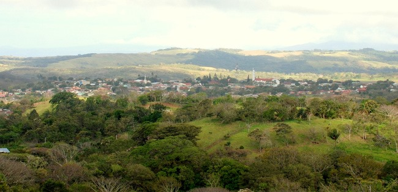

Atractivos Destacados
Descubre los tesoros naturales de Tilarán

Lago Arenal
El lago más grande de Costa Rica, famoso por sus deportes acuáticos y vistas panorámicas al Volcán Arenal.
Ver más
Parques Eólicos
Descubre cómo Tilarán aprovecha sus fuertes vientos para producir energía renovable y sostenible.
Ver más

Cultura Sabanera
Conoce las tradiciones, música y gastronomía de los sabaneros guanacastecos.
Ver más
Aventuras Extremas
Desde canopy hasta rappel, vive experiencias llenas de adrenalina en paisajes impresionantes.
Ver más